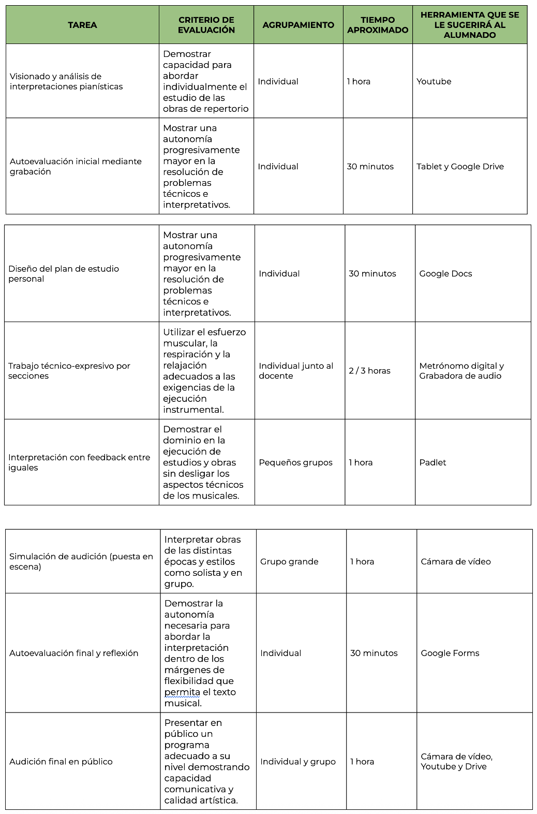

Guía Didáctica
Introducción
Esta situación de aprendizaje, titulada “Del aula al escenario: interpretar, comunicar y emocionar”, está diseñada para el alumnado de 1º de Enseñanzas Profesionales de Piano y tiene como objetivo principal desarrollar una interpretación consciente, expresiva y comunicativa, integrando el uso de herramientas digitales en el proceso.
La propuesta combina el trabajo técnico-musical con la reflexión crítica y la puesta en escena, favoreciendo un aprendizaje progresivo que culmina en la interpretación en público.
Elementos curriculares
Esta situación de aprendizaje contribuye al desarrollo de:
Competencias específicas relacionadas con la interpretación instrumental, la autonomía en el estudio y la comunicación artística.
Saberes básicos vinculados a la técnica pianística, la expresión musical y la puesta en escena.
Competencia digital, mediante el uso de herramientas de grabación, edición y reflexión del propio aprendizaje.
Atención a la diversidad
Se contemplan diferentes medidas para atender a la diversidad del alumnado:
Adaptación del repertorio según nivel
Flexibilidad en los tiempos de aprendizaje
Uso de apoyos visuales y auditivos
Posibilidad de diferentes formas de expresión (interpretación, grabación, reflexión oral o escrita)
Recomendaciones para el profesorado
Para una correcta implementación del proyecto se recomienda:
Realizar una planificación previa de los recursos tecnológicos
Comprobar el funcionamiento de dispositivos y conexión antes de las sesiones
Ofrecer alternativas en caso de problemas técnicos
Fomentar la autonomía del alumnado en el uso de herramientas digitales
Utilizar plataformas accesibles e intuitivas
Asimismo, es importante crear un clima de aula que favorezca la confianza, especialmente en las actividades de interpretación en público, promoviendo una evaluación constructiva y formativa.
Resolución de problemas técnicos
La resolución de incidencias tecnológicas se abordará desde un enfoque preventivo y flexible:
Revisión previa de dispositivos
Uso de herramientas sencillas y multiplataforma
Disponibilidad de alternativas no digitales
Apoyo mediante guías o tutoriales
De este modo, se garantiza la continuidad del aprendizaje y una experiencia inclusiva y eficaz.
Relación entre tareas y criterios de evaluación
A continuación, se presenta la relación entre las tareas planteadas en el proyecto y los criterios de evaluación correspondientes. La imagen se verá ampliada al pasar sobre ella con el ratón:
